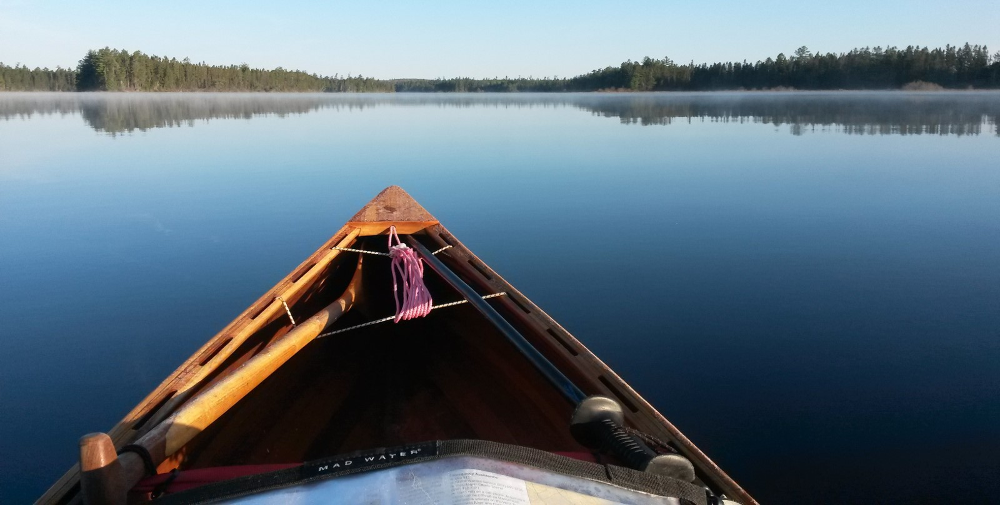

Otter Creek Smallcraft
Otter Creek Smallcraft
Nestled in the Champlain Valley of Vermont, Otter Creek Smallcraft offers a line of gorgeous, hand-crafted, cedar-strip canoes, works of art that are intended for use, built to be paddled, and proven to perform.
Sole proprietor, Peter Macfarlane, long-time paddler, designer and builder of these canoes lovingly fashions raw lumber into delicate curves that cleave water, working alone and focused every step of the way until applying the last lick of varnish, ensuring that his vision is brought to life, that every boat meets his two chief criteria: handling excellence and visual elegance.
E
F